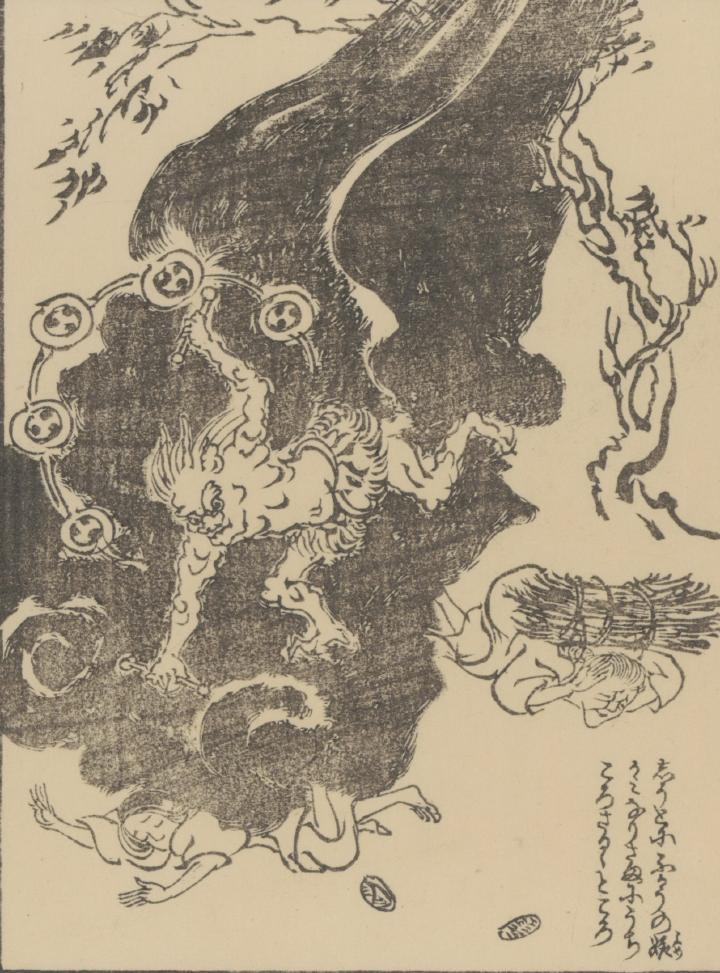

← 图鉴索引

舅に不孝な嫁を雷神が打ち殺している。
著作者：山本北山／出典：親書誌：U426_nichibunken_0422：むかしありしこと；ムカシアリシコト／日付：2015／資源識別子：U426_nichibunken_0422_0005_0000
Copyright (c)2010- International Research Center for Japanese Studies, Kyoto, Japan. All rights reserved.